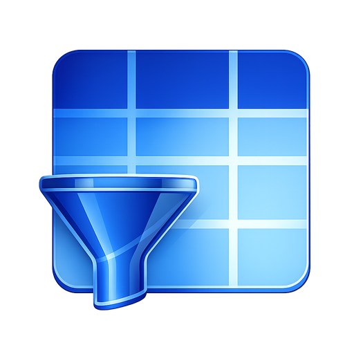

Windows desktop
A focused workspace designed for local analytical work.

SiftIQGet SiftIQ ↗SiftIQ for Windows
Install SiftIQ from the Microsoft Store and start working with Excel and CSV data in one connected workspace.
A focused workspace designed for local analytical work.
Start with the files your team already uses.
Keep core workflows close to your device and under your control.